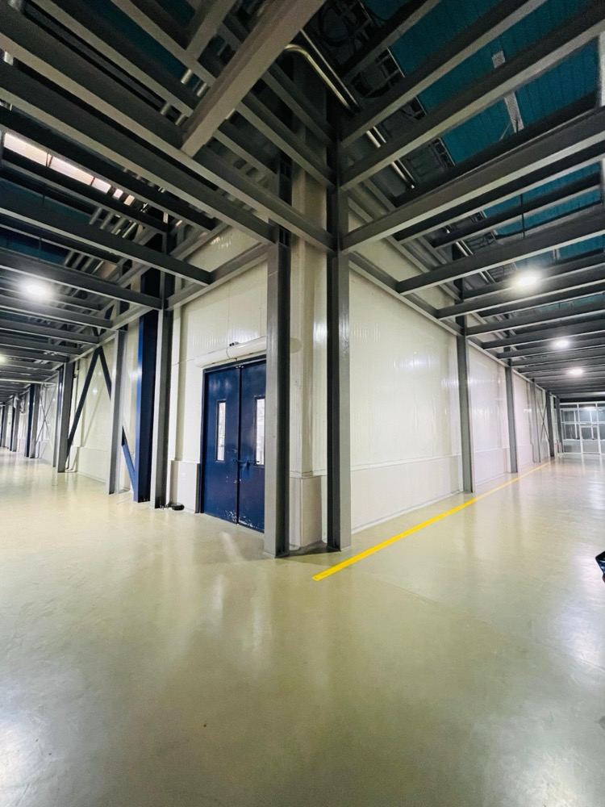
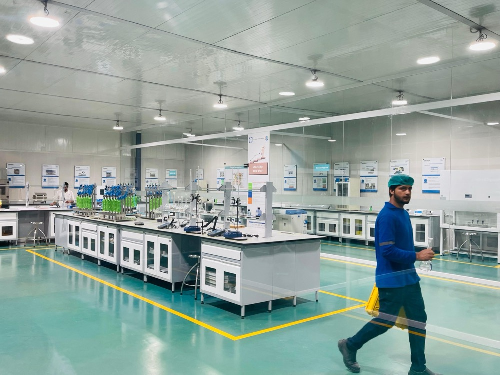
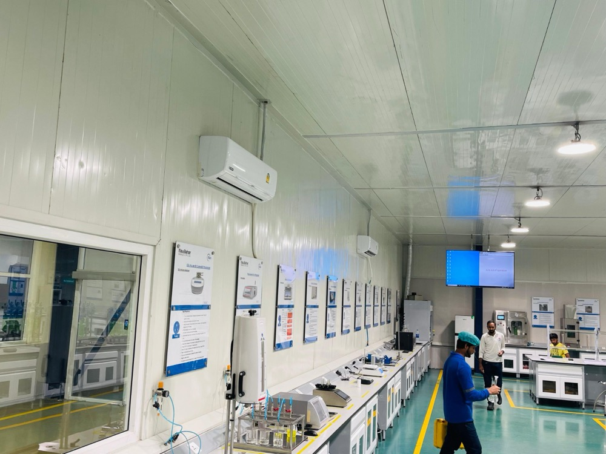
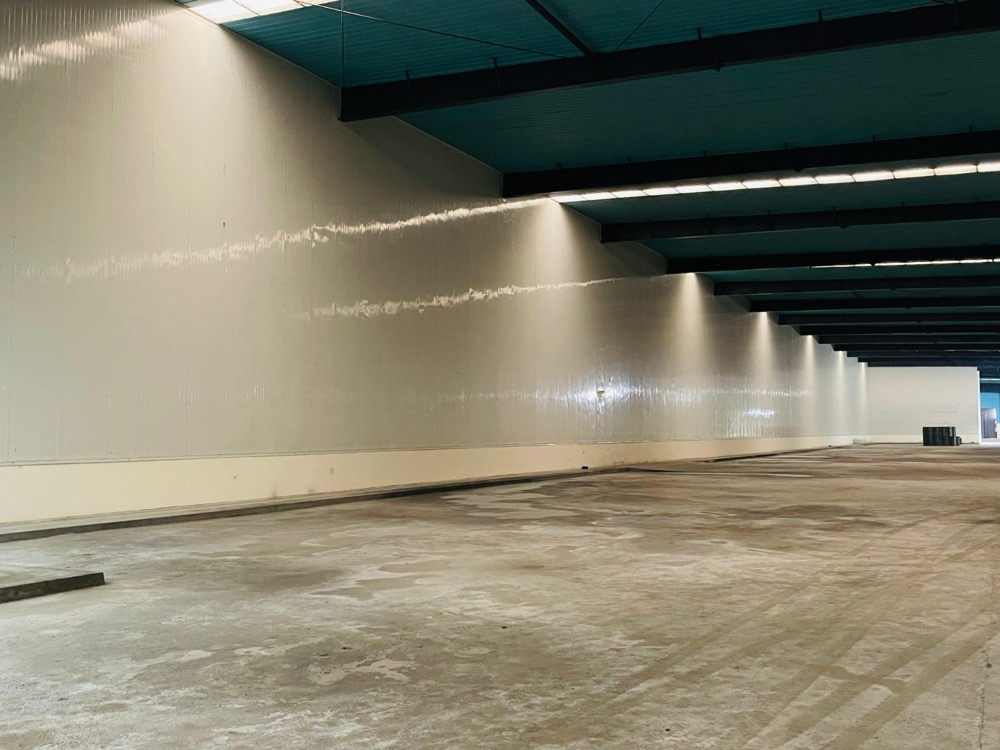
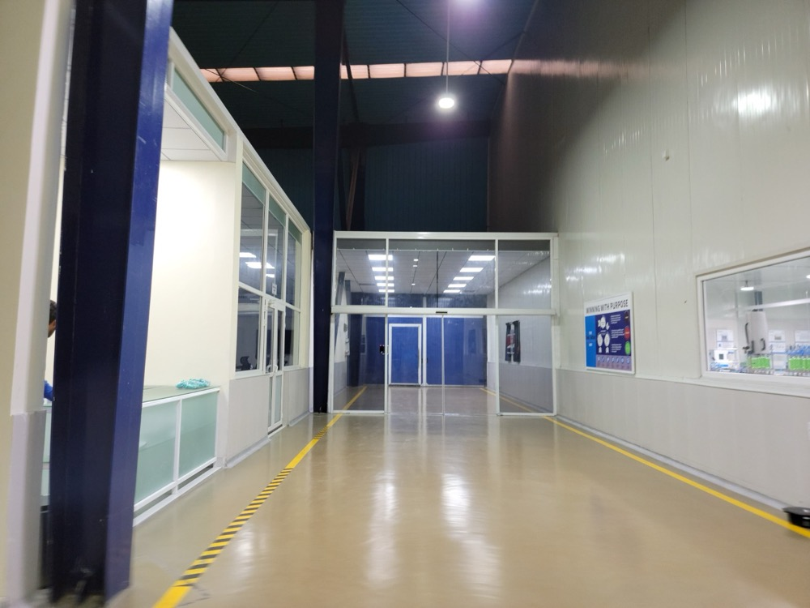
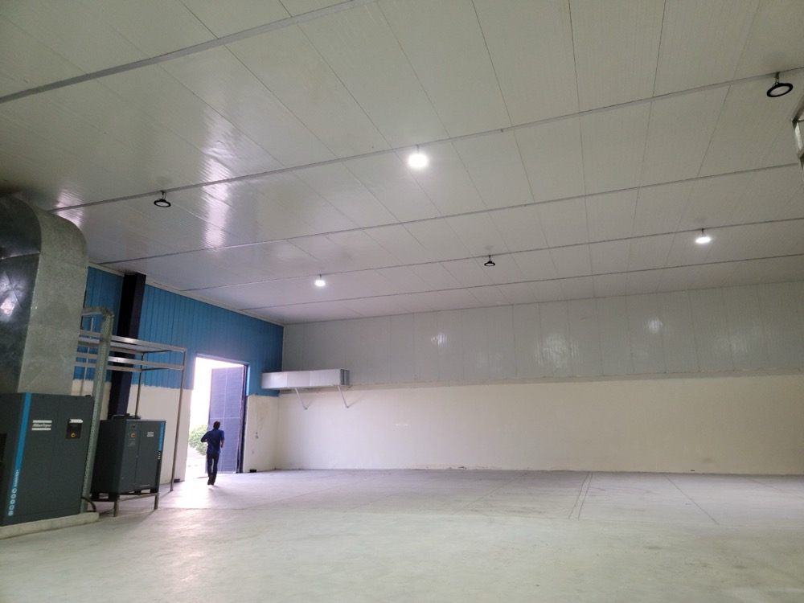
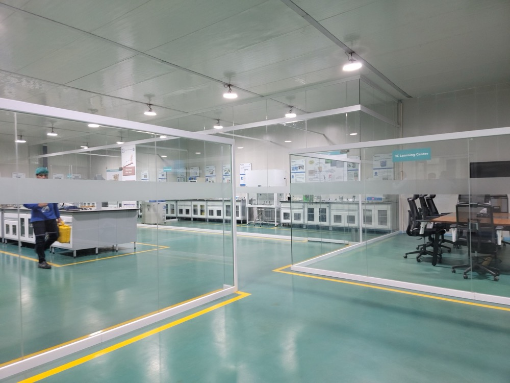

Naubahar Bottling Company, Gujranwala — cold storage warehouse and a PIR-clad beverage quality-control laboratory for the Pepsi franchise
Izhar Foster delivered the cold storage warehouse and the brand-grade quality-control laboratory environment for Naubahar Bottling Company — the Pepsi franchise operation in Gujranwala, Punjab. Two distinct disciplines on one site: a high-volume PIR-clad cold-store envelope for finished beverage staging, and an immaculate climate-controlled QC lab where the brand's chemistry, microbiology, and sensory work happens. Both built with FireSafe PIR sandwich panels manufactured at our 277,460 sqft Lahore plant.

Pakistan's two largest beverage majors — Coca-Cola and Pepsi — both rely on Pakistan-built cold-chain infrastructure delivered by Izhar Foster. The Pepsi side of that pairing is anchored by Naubahar Bottling Company, the franchise that bottles and distributes the Pepsi product line for central and northern Pakistan from operations including Gujranwala.
The Naubahar installation is unusual in our portfolio because it is two engineering disciplines on one site, both anchored by the same FireSafe PIR sandwich panel. The first is the cold-storage warehouse — a high-volume finished-goods staging environment for PET and glass bottles between filling line and distribution. The second is the beverage quality-control laboratory — a brand-grade, climate-controlled, low-particulate envelope where the franchise's QC chemistry, microbiology, and sensory teams do the work that protects the Pepsi standard.
The QC laboratory — what we built and why it matters
Beverage quality control is the first and last line of defence on every batch that leaves the line. PepsiCo's Global Operating Standard, AIB International audits, ISO 17025 lab competence, and the franchise's own internal QC discipline all bear on what the lab environment has to deliver.
The lab visible in the project photography is a full PIR-clad envelope — walls and ceiling. Reasons:
- Hygienic surface — PIR sandwich panels finish to a smooth, easy-clean, non-porous painted face. There are no organic substrates that can harbour mould; no woodgrain that absorbs spilled chemistry; no joints that trap dust. The panels wash down at high pressure without degrading.
- Dimensionally stable — the lab cycles through humidity loads (titrators, water-based dilutions, autoclaves) and through Gujranwala's seasonal swing from sub-10°C winter mornings to 45°C summer afternoons. PIR's dimensional drift is below 1% across that range, which means the gypsum-board cracks and gaps endemic to lab-grade construction simply don't appear.
- Fire-classified envelope — solvent inventories typical of a beverage QC lab (alcohols for cleaning, organics for spectroscopy, acids and bases for titration) require a fire-rated wall and ceiling system. Izhar Foster's FireSafe PIR is fire class B1 (foam B2) per ASTM E84 surface burning characteristics test — the same standard insurers globally specify for laboratory and industrial fitouts.
- Brand-quality finish — pre-painted at the steel-coil stage in the colour and gloss specified by the franchise. The lab in the photograph reads as a Pepsi environment from the moment you walk in.
The lab environment also includes an epoxy floor with 5S yellow lane markings (visible in the wide-angle), centre-island bench with serviced instrument bays, sealed wall-floor coves with no harbourage gap, and full chase routing of services up the wall and into the ceiling void behind the PIR panels.
The cold-storage warehouse — the envelope that holds Pakistan's Pepsi inventory
Adjacent to the lab, the Naubahar cold-storage warehouse is a high-volume PIR-clad environment for finished-goods staging. Beverage cold storage at this scale operates between +2 and +12°C depending on product line — Pepsi Aquafina mineral water, Mountain Dew, 7UP, Mirinda, Sting, Pepsi Black — each within its own preserved quality envelope.
The structural shell is steel frame; the thermal shell is FireSafe PIR sandwich panels in 100 mm or 125 mm core thickness depending on the room. U-values of 0.19 and 0.16 W/m²K respectively — translating to heat ingress that is roughly a third of what an EPS-clad equivalent would suffer. Over a 25-year operating life on a building this size, the difference is measured in tens of millions of rupees in electricity savings.
Refrigeration is Bitzer-based — the global gold standard for industrial compressors, with full parts and service support resident in Pakistan. Heatcraft (USA) rack systems integrate with the compressor stack for the multi-zone temperature requirements typical of a Pepsi franchise (different SKU bands at different setpoints). LU-VE (Italy) evaporators, ceiling-mounted with long-throw fans, deliver uniform air distribution across the racking. Hörmann high-speed insulated doors at the loading interface — heated frames where they cross the dewpoint, multi-stage gasket sealing, sized for the cycle-frequency of working dock activity.
The Pakistan-specific engineering case
Gujranwala summer ambient regularly hits 45°C. The condenser side of any refrigeration plant loses approximately 2.0%/K of its capacity above the design point on a medium-temperature application. A plant designed against a 35°C ambient — the default in many imported design tools — will be undersized half the year in a Pakistani Punjab city.
Izhar Foster sizes every refrigeration plant against the ASHRAE 0.4% design DB temperature for the specific Pakistani city, with a local +2 K climate uplift baked in. For Gujranwala that means designing the condenser for 47°C ambient peak. The result is a plant that holds setpoint through the worst of the season without staging emergency chilling — and without the operating-cost penalty of permanent over-circulation.
Power redundancy is the other Pakistan-specific reality. Every Naubahar refrigeration plant is generator-backed, with sequenced restart logic on the compressor stack, soft-start on the larger machines, and UPS on the controls and alarms. None of this is custom — it is the standard cold-storage specification for industrial Pakistan, and it is in our calculator presets.
Photographs from the commissioned facility






Comparable beverage cold-chain commitments
Naubahar Bottling sits alongside Coca-Cola TCCEC Lahore as Izhar Foster's two flagship Pakistani beverage cold-chain installations — both global majors, both relying on Pakistan-manufactured FireSafe PIR sandwich panels and Pakistan-installed refrigeration plants. The commercial implication: every other beverage bottler, juice plant, or dairy operator scoping cold-storage capacity in Pakistan can specify the same vendor and the same engineering pedigree, with named projects to reference.
Specification context — beverage bottling cold storage and QC lab
| Parameter | Beverage bottling cold storage | Beverage QC laboratory |
|---|---|---|
| Operating temperature | +2 to +12 °C | +18 to +24 °C, ±1 K |
| Relative humidity | Uncontrolled (cold-store standard) | 40–60% RH controlled |
| Envelope | 100–125 mm FireSafe PIR walls and roof | 50–80 mm FireSafe PIR walls and ceiling |
| Floor | Sealed industrial concrete | Epoxy floor with 5S markings |
| Air changes per hour | 0.5–1 (cold-store leakage budget) | 10–20 (lab grade) |
| Lighting | 250–400 lux warehouse standard | 500–750 lux at bench, daylight 5000 K |
| Fire class | B1 envelope (PIR foam B2) | B1 envelope, often A2 noted in solvent zones |
| Refrigeration | Bitzer + Heatcraft + LU-VE | HVAC-driven, separate plant |
| Hygiene zoning | Production-side separation | Sealed coves, no harbourage |
| Audit standards | PepsiCo GOS, AIB, ISO 22000 | PepsiCo GOS, AIB, ISO 17025 |
Where to start if you're scoping beverage cold storage
If you are scoping a bottling-plant cold storage, juice or dairy production facility, or a brand-grade QC laboratory in Pakistan, the engineering path begins with three things: capacity (m³ or pallet count), temperature setpoint (or setpoint band, if multi-zone), and city. Run those through our cold room heat load calculator and you have an indicative refrigeration kW number within a few minutes — calibrated against the local ASHRAE design point.
For a complete scope (envelope plus refrigeration plus doors plus lab fitout if relevant), request a quote with your project specifics. Engineers reply within 24 hours; quote turnaround is typically one working week.
Other beverage and cold-chain projects in Pakistan.
How Naubahar sits within Izhar Foster's portfolio of named cold-chain installations across Pakistan.
Coca-Cola TCCEC
High-bay drive-in pallet racking and ammonia-based finished-goods cold storage for Coca-Cola in Lahore — Izhar Foster's other flagship beverage cold-chain installation.
023PL · KarachiConnect Logistics
Multi-bay third-party cold-chain logistics warehouse with multiple loading docks and PIR roof-and-wall envelope.
03Lab · LahoreHaier Climate Test Lab
Climate-controlled environmental testing chambers for Haier's electronics QC laboratory in Lahore — PIR-clad envelope discipline applied to electronics testing.
04Agriculture · SindhUSAID Banana Ripening
Donor-funded banana ripening and cold storage rooms for farmer cooperatives in Sindh — PIR-clad ripening chambers with controlled-atmosphere ethylene management.
How much would your version cost?
See the cost breakdown for a Pepsi-franchise-style cold storage warehouse and PIR-clad QC laboratory. Rough estimate only — exact cost will differ. ±20% indicative band, includes editable Izhar margin. Engineer validation required before quoting a customer.
Open the rough estimator →